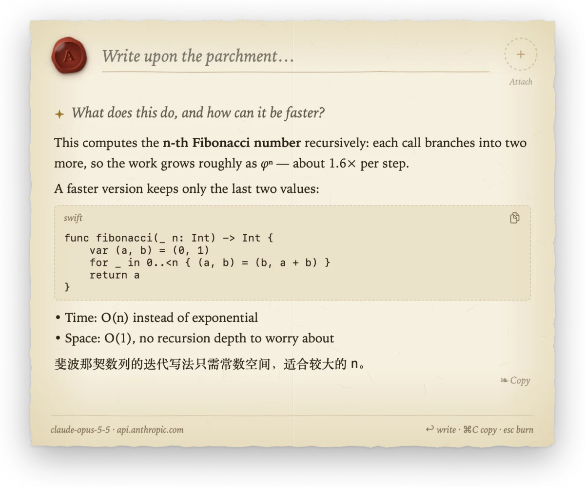
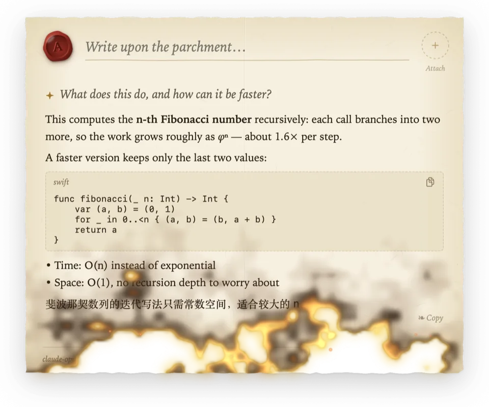
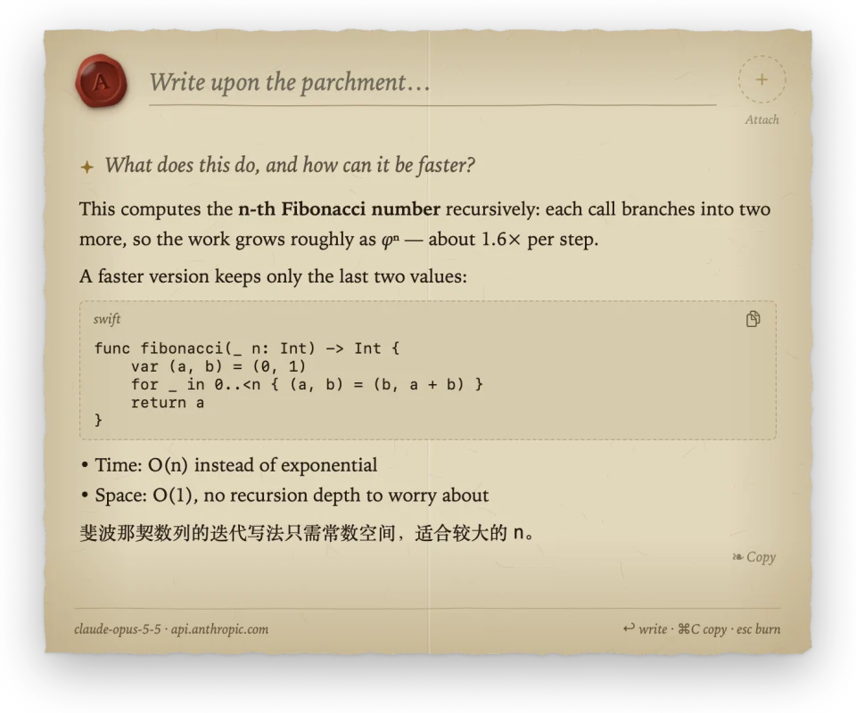
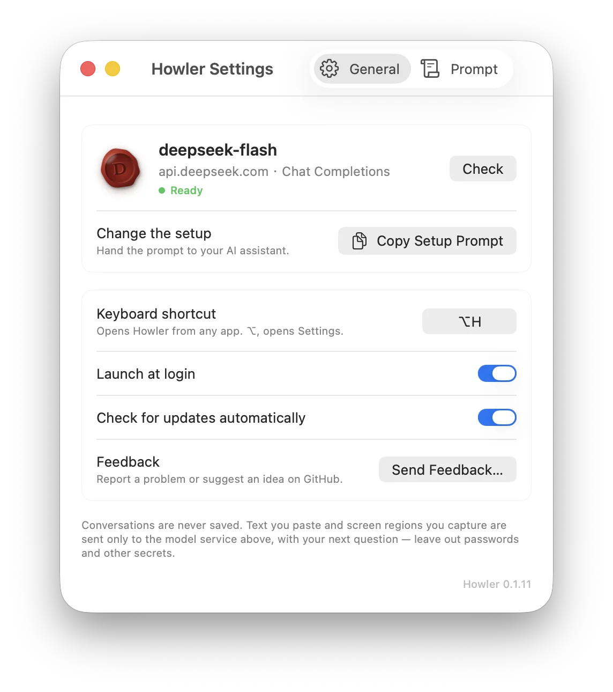

Howler
Burn after reading.
A sealed letter for your quick questions on macOS. Write on the parchment, a quill writes the answer back, and the letter burns when you're done. macOS 上一封用火漆封着的信，专门用来问小问题。在羊皮纸上写下问题，羽毛笔把回答写在下面；读完，信就烧掉。
A letter, not a chat box一封信，不是聊天框
Press ⌥H anywhere. A letter settles at the top of the screen, already sealed in wax. 在任何应用里按 ⌥H，一封封好火漆的信就落在屏幕上方。

Parchment and a quill羊皮纸与羽毛笔
Deckled edges, fibers, a fold. Your question sits on a ruled line; the answer streams in at a hand's pace, fresh ink glowing gold before it settles to sepia. The sheet grows with the answer, up to an A4 page. 毛边、纤维纹理、一道折痕。问题写在横线上，回答按手写的节奏逐字出现，新墨先泛起金光，再沉为墨色。纸随回答向下展开，最长到 A4 比例。
Markdown, code blocks with copy, and follow-up questions on the same sheet, separated by a fleuron. 支持 Markdown 和可复制的代码块；追问写在同一张纸上，每轮之间用花饰隔开。

Burn after reading阅后即焚
Press Esc or click outside, and the letter catches fire at its bottom edge. Scorch, embers and sparks climb to the seal, and the conversation goes with them. Nothing is kept. 按 Esc 或点击纸外，信纸从底边起火，焦痕、火光和火星一路烧到火漆印，这次对话也随之烧掉，什么都不留。
Reduce Motion skips the fire; the letter simply goes.开启“减少动态效果”时不播放燃烧，信纸直接收起。

Wax-sealed context, candlelit at night火漆附件，夜里是烛光
Paste a long text or a picture, or capture a region of the screen: it is sealed into an amber seal cut with runes instead of filling your question. The clipboard is read only when you paste. 粘贴长文本或图片，或截取屏幕区域，内容会封进一枚刻着符文的琥珀色火漆印，不会塞进问题里。剪贴板只在你粘贴时读取。
In Dark Mode the paper dims to candlelight, so it never glares against a dark desktop. 深色模式下，纸张暗成烛光色，不会在深色桌面上刺眼。
Any model. Set up by your assistant.任何模型，交给 AI 助手配置

Howler writes with one model service. Copy the setup prompt from Settings and paste it into Claude Code, Codex or any assistant that can run commands. It asks which model you want, reads the docs, configures Howler's built-in command line and checks it works. Howler 只连接一个模型服务。在设置里复制配置提示词，粘贴给 Claude Code、Codex 等能运行命令的 AI 助手。它会问你想用哪个模型、查官方文档、用 Howler 自带的命令行写好配置，并检查能否正常回答。
Your API key never enters the chat: you copy it, and it goes straight into the Keychain. API Key 不会出现在聊天里：你复制好，它直接存进钥匙串。
pbpaste | Howler config set api-key --stdin
Howler check
✓ Passed: deepseek-flash answered.- OpenAI
- Anthropic
- Google Gemini
- xAI
- DeepSeek
- OpenRouter
- Ollama & LM Studio, locally本机 Ollama 与 LM Studio
Chat Completions, Anthropic Messages and Gemini formats, with real streaming. 支持 Chat Completions、Anthropic Messages 与 Gemini 三种格式，真实流式输出。
Nothing is saved什么都不保存
- No chat history, ever. Messages live in memory and burn with the letter.从不保存对话：消息只在内存里，随信纸烧掉。
- The API key lives in the macOS Keychain and is never printed.API Key 存在 macOS 钥匙串里，从不打印。
- Requests go straight to the service you chose, never through a relay.请求直接发往你选择的服务，不经过任何中转。
- No logs, no telemetry, no account.没有日志，没有统计，不需要注册账号。
- Update checks ask GitHub once a day, only if you allow it, and can be turned off.检查更新时每天访问一次 GitHub，需你同意，也可以关闭。
Seal your first letter封上你的第一封信
- Download Howler.dmg and drag Howler onto Applications.下载 Howler.dmg，把 Howler 拖到 Applications。
- Open it. It is signed with a Developer ID and notarized by Apple, so it opens like any other app.打开它。应用已用 Developer ID 签名并经 Apple 公证，像其他应用一样直接打开。
- Copy the setup prompt from Settings, hand it to your assistant, then press ⌥H.在设置里复制配置提示词交给 AI 助手，然后按 ⌥H。